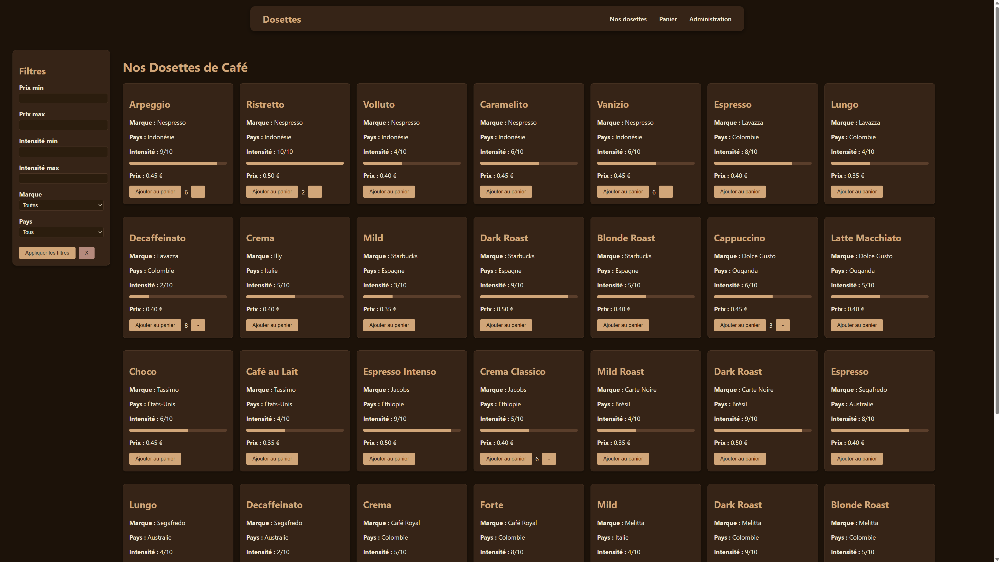
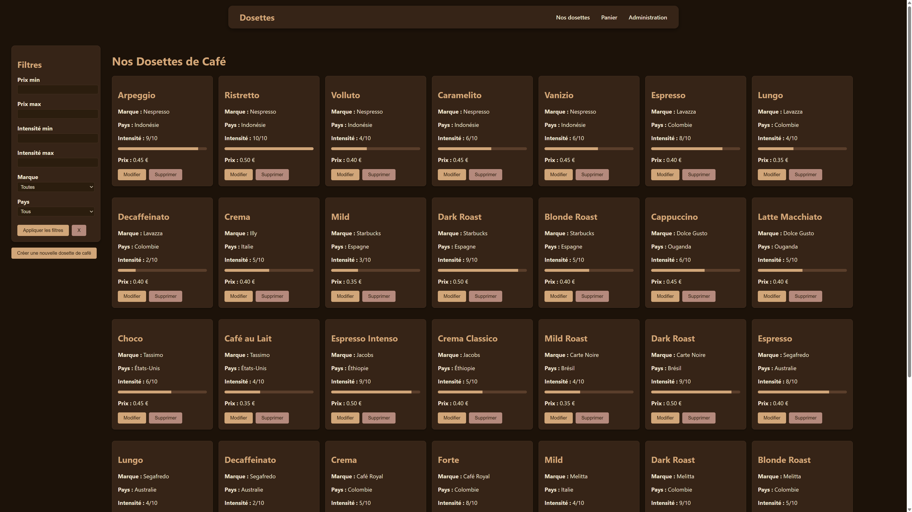
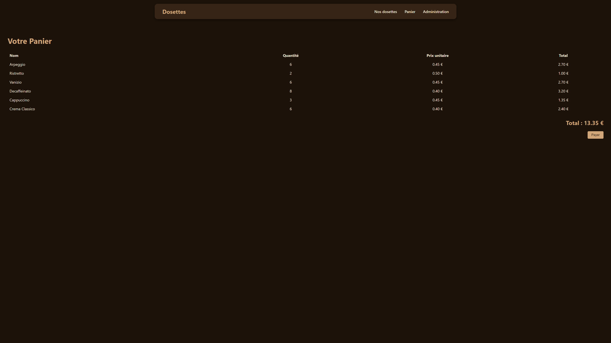

Mes Projets scolaires
API de gestion de dosettes de café
Technos : React.js (JavaScript), Laravel (PHP), MySQL, Docker
Contexte et objectif : Gérer un stock de dosettes de café (créer, modifier, supprimer) et permettre à l'utilisateur d'acheter des dosettes
Tâches effectuées :
- Conception de la base de données (MySQL) sur un docker.
- Créer une api avec Laravel
- Concevoir des routes pour récupérer des informations sur les marques, les continents et pays des dosettes (/marques, /continents et /pays)
- Concevoir la route /dosettes pour récupérer la liste des dosettes et créer une possibilité de filtrage par exemple de prix ou d'intensité
- Gérer le mode d'envoi de /dosettes pour que ça gère la dosette sélectionnée. Par exemple : /dosettes/{id} envoyé en 'get' récupère les informations d'une dosette. En 'update' cela permet de modifier les données d'une dosette. En 'delete' cela permet de supprimer la dosette.
- Concevoir la route /dosette pour créer une nouvelle dosette
- Création de l'interface avec React, en liant le docker et l'interface
- Gérer la partie achat de dosettes
Page d'accueil
Page d'administration
Panier d'un utilisateur
